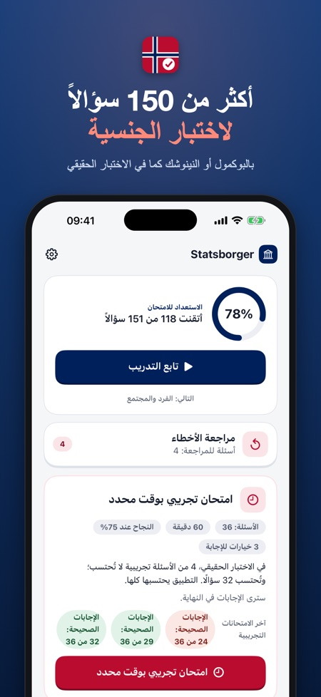
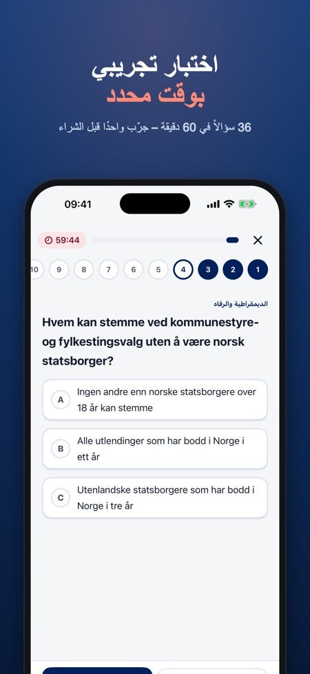
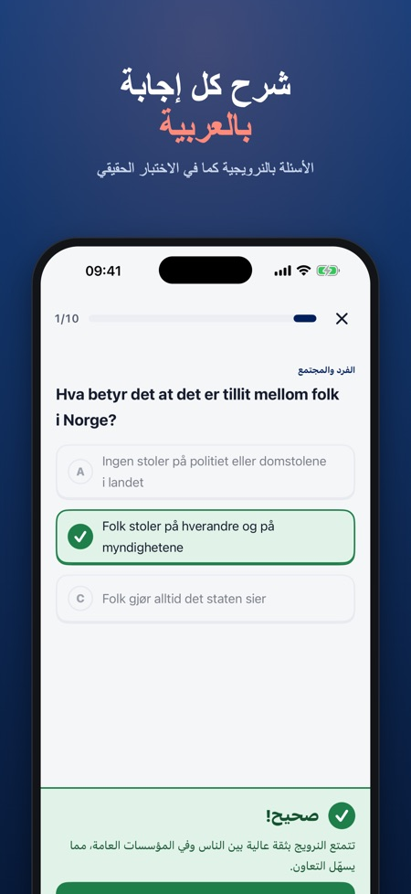

Statsborgerprøven تدريب. أكثر من 150 سؤال تدريبي بالنرويجية مع شرح بالعربية. امتحان تجريبي بوقت محدد: 36 سؤالًا في 60 دقيقة كما في الاختبار الحقيقي.



دفعة واحدة فقط، بلا اشتراك. استعد لاختبار الجنسية النرويجية (statsborgerprøven) مع أكثر من 150 سؤال وشرح.
الأسئلة بالنرويجية والشرح بالعربية
كما في الاختبار الحقيقي، جميع الأسئلة باللغة النرويجية (بوكمول أو نينوشك). بعد كل إجابة تقرأ سبب صحتها أو خطئها بالعربية (أو بالنرويجية أو الإنجليزية أو الألمانية أو البولندية). الواجهة العربية كاملة من اليمين إلى اليسار.
ماذا يتضمن التطبيق
• أكثر من 150 سؤال بلغة نرويجية بسيطة عن مواضيع المعرفة بالمجتمع الـ8: التاريخ والجغرافيا، الديمقراطية والرفاه، الفرد والمجتمع، القدوم إلى النرويج، الحياة المهنية، التعليم، الأسرة والنشأة، والصحة
• امتحان تجريبي بوقت محدد بالصيغة الرسمية: 36 سؤالًا في 60 دقيقة، والنجاح من 75%
• تعود إليك أخطاؤك حتى تجيب عنها صحيحًا مرتين متتاليتين
• تقدّمك في كل موضوع
سعر عادل
جرّب موضوع التاريخ والجغرافيا وامتحانًا تجريبيًا كاملًا دون شراء. افتح كل شيء بعملية شراء واحدة. بلا اشتراك، بلا إعلانات، بلا حساب. تشمل عملية الشراء أفراد العائلة عبر المشاركة العائلية. يعمل دون إنترنت.
هذا التطبيق مستقل وغير تابع لـ HK-dir أو UDI أو للحكومة النرويجية. جميع الأسئلة من تأليفنا استنادًا إلى مواضيع المنهج المعلنة. الامتحان التجريبي للتدريب فقط، وقد يختلف الاختبار الحقيقي.